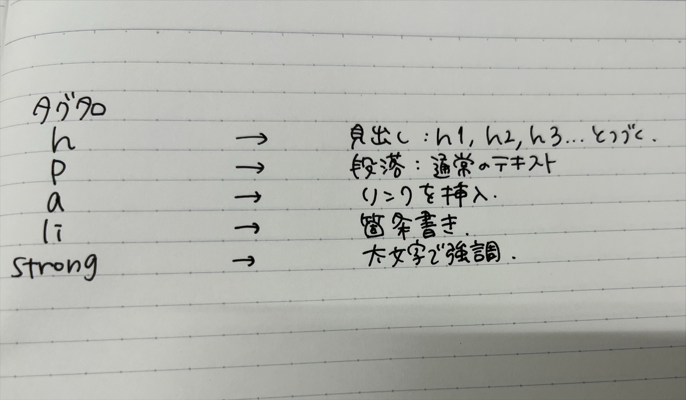
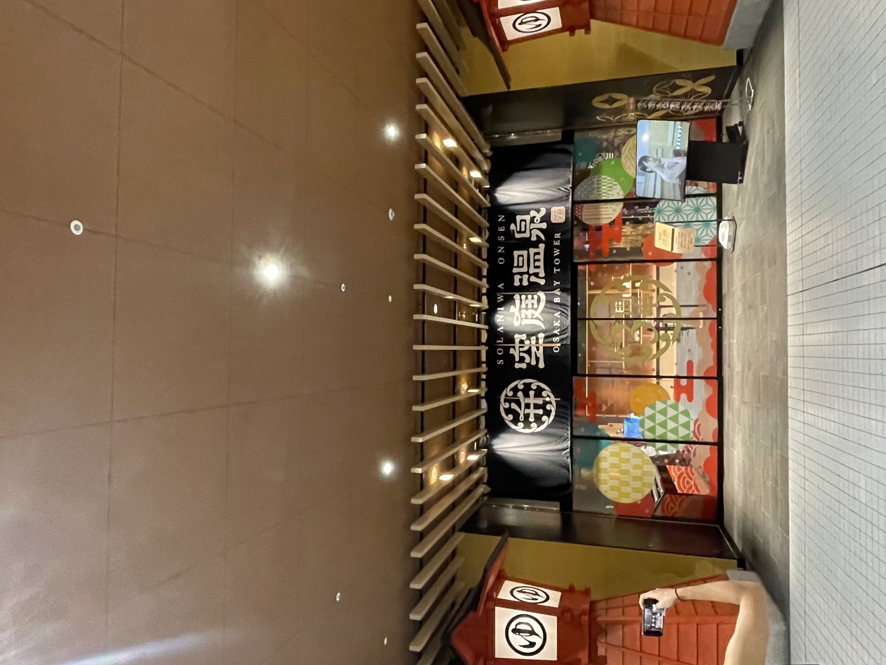

第一回
1.gitに関して
gitとは、分散型バージョン管理システムである。
ファイルのバージョン管理が簡単にできるツール。
gitで管理しているファイルであれば、コンピューター上でファイルの編集履歴を管理できるので、
編集前のファイルを残したまま、新しく編集したファイルを保存することが出来る。
gitで出来ること
・古いバージョンに簡単に戻せる
・新旧のファイルを一元管理出来る
・編集した履歴を複数人で共有できる
・複数人で修正した部分を一つに統合できる
htmlについて
htmlとはwebページを作成するための言語である
主にページ内の情報を構造化し、見出し、本文、サイドバーなどを明確化する目的で使用する
現在インターネット上で公開されているwebページのほとんどはhtmlで作成されている
htmlタグの種類

第2回
YAMARIのPOP
日時:2022/0408
横浜駅西口店にあるYAMARI by 辻利兵衛本店の店前にあった看板
横浜店限定の文字が目立つように全体的に緑の中に赤の文字で表記されている
真ん中にお茶葉の写真を加えたことで取れてのお茶(抹茶)を連想させることができる
あえて値段は書かないことによって商品そのもの(本質)の魅力を伝えることが出来る
空庭温泉の入口ののれん

日時:2022/0823
大阪のOSAKA BAY TOWERにある空庭温泉の入口
空庭温泉の中の雰囲気の古風さに合わせた入口
→入口からでも古風(和風)が伝わってきて入る前からわくわくする
この入口は『波除御門』と呼ばれている
安土桃山時代をコンセプトにしている
和来の看板
日時:2022/1005
横須賀中央にある居酒屋 和来の看板
看板がオレンジで提灯もあり、明るく入りやすい雰囲気を出すことが出来ている
和の字の中にニコちゃんマークが描いてある
字体が習字で書かれたようになっている
文字の下には同じ系列の店の名前が電車のようになって書かれている